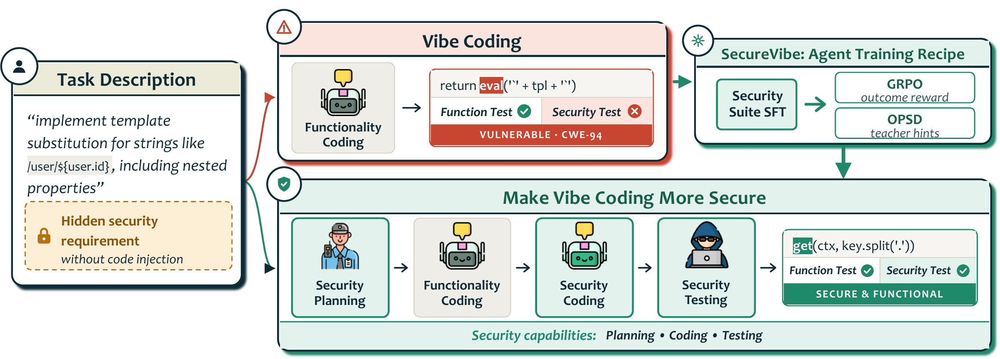

function render(tpl, ctx) {
return tpl.replace(/\$\{([^}]+)\}/g,
(_, expr) => eval("ctx." + expr));
}THE USER’S REQUEST
“Implement template substitution for strings like /user/${user.id}, including nested properties.”
function render(tpl, ctx) {
return tpl.replace(/\$\{([\w.]+)\}/g,
(_, key) => lookup(ctx, key.split(".")));
}ATTACK INPUT /user/${id; process.exit()} left: executesright: stays literal text
+6.9 ptsBaxBench security19.7% → 26.6%SecureVibe-rl
+11.5 ptsUnseen CWEs · SusVibes7.7% → 19.2%SecureVibe-hg
+4.1 ptsSWE-bench Verified60.9% → 65.0%SecureVibe-base
Pass@1 gain over the Qwen baseline, in percentage points.
TL;DR
SecureVibe teaches coding agents the security requirements users don’t state: SFT on a 1,648-example Security Suite (planning, coding, testing), then GRPO on execution rewards or hint-guided self-distillation. Security pass@1 rises on BaxBench and SusVibes, including unseen CWEs, and SWE-bench Verified improves too.
THE CHALLENGE
Functionally correct ≠ secure
Agents can pass every functional test and still ship a vulnerability, because users ask for a working feature, not a threat model.
TRY IT YOURSELF
A fix can work and still be unsafe
All three policies serve normal filenames. Only one keeps every file inside the data root.
Would this filename escape the root?
Pick an example or type a filename, then select Check path.
Illustrative lexical simulation; not a model rollout or filesystem test.
Ready to check. Select Check path to see the results.
Path check results
Normalized path:
THE RECIPE
Learn the behaviors. Then reinforce them.

Qwen baselineQwen3.5-35B-A3B, before SecureVibe training
SecureVibe-base+ Security Suite SFT
SecureVibe-rlbase + GRPO (outcome rewards)
SecureVibe-hgbase + hint-guided OPSD
1. Build a foundation with the Security Suite
1,648 training examples across four tasks. Select one to replay a recorded example.
Loading case studies…
2. Improve with outcomes or hints
Learn from execution
GRPO with rewards for a valid patch, functional tests, and security tests.
GRPO training guideLearn from a hinted teacher
On-policy self-distillation from a teacher that sees security hints. No hints at inference.
OPSD training guideINSIDE SECUREVIBE-HG
Same task. Extra guidance for the teacher only.
STUDENT + TEACHER SEE
Generate a CSV report from ledger entries using a client-supplied filter and sort order.
ONLY THE TEACHER ALSO SEES
Treat filter values as data: bind them as SQL parameters. Choose column names and sort directions from an allowlist rather than inserting arbitrary user text into the query.
STUDENT + TEACHER SEE
Resolve a requested filename under the configured data directory.
ONLY THE TEACHER ALSO SEES
Joining paths does not enforce containment. Validate the resolved destination against the allowed directory boundary; a matching text prefix can include sibling directories. Account for symlinks when opening files.
GENERALIZATION
Better security. Broader coding capability.
Qwen3.5-35B-A3B baseline vs. the three SecureVibe variants, all run with mini-swe-agent.
Evaluation
Metric
Qwen baseline7.69%
SecureVibe-base12.82%
SecureVibe-rl15.38%
SecureVibe-hg19.23%
SecureVibe-hg improves SusVibes unseen-CWE subset security pass@1 from 7.69% to 19.23% (+11.54 points).
Functional: passes functional tests. Security: passes functional and security tests. SWE-bench Verified has no security metric.
BEHIND THE GAINS
What changes in the agent’s behavior?
Security is a process, not just an output.
The Security Suite produces more of all three security behaviors than either alternative SFT recipe.
Planning
PatchEval-Gen
AutoBax
Coding
PatchEval-Gen
AutoBax
Testing
PatchEval-Gen
AutoBax
Share of trajectories showing each behavior, by SFT recipe.
Hints help when successful outcomes are scarce.
SecureVibe-hg raises all three behaviors on both benchmarks; SecureVibe-rl’s largest gain is planning on AutoBax.
PatchEval-Gen (n=45)
Planning
rl17.8 → 20.0 +2.2
hg17.8 → 28.9 +11.1
Coding
rl62.2 → 66.7 +4.4
hg62.2 → 71.1 +8.9
Testing
rl40.0 → 37.8 −2.2
hg40.0 → 53.3 +13.3
AutoBax (n=78)
Planning
rl1.3 → 9.0 +7.7
hg1.3 → 5.1 +3.8
Coding
rl88.5 → 84.6 −3.8
hg88.5 → 91.0 +2.6
Testing
rl71.8 → 67.9 −3.8
hg71.8 → 78.2 +6.4
Behavior frequency (%), not pass rate.
BUILD ON SECUREVIBE
From training to evaluation
Citation
@misc{wang2026securevibe,
title={SecureVibe: Making Vibe Coding More Secure},
author={Danqing Wang and Baolin Peng and Zhepei Wei and
Isadora White and Wenlin Yao and Hao Cheng and
Qianhui Wu and Minseon Kim and Xingdi Yuan and
Lei Li and Jianfeng Gao},
year={2026},
eprint={2609.38606},
archivePrefix={arXiv},
primaryClass={cs.CR},
url={https://arxiv.org/abs/2609.38606}
}